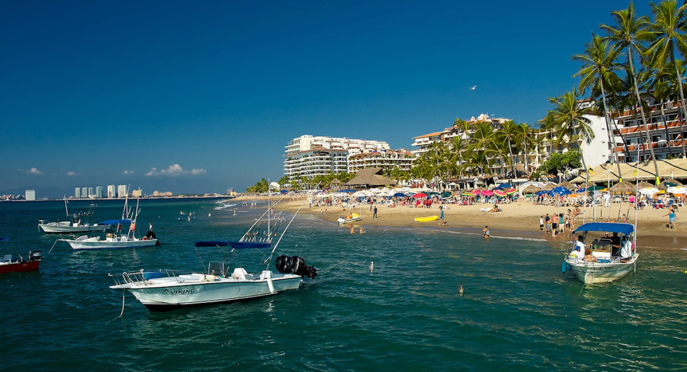

Bahía de Banderas es un municipio situado en la costa de Nayarit, México. Limita al norte con el municipio de San Blas, al sur con Puerto Vallarta (Jalisco), y al oeste con el Océano Pacífico.
Bahía de Banderas celebra el Día de la Virgen de Guadalupe el 12 de diciembre con una gran fiesta. También se celebran eventos como el Carnaval de Bahía, con música, bailes y desfiles en la playa.
La economía de Bahía de Banderas está basada en el turismo debido a sus playas y atractivos naturales. También destaca la producción agrícola, especialmente en la ganadería, el cultivo de mango, piña y otras frutas tropicales.
